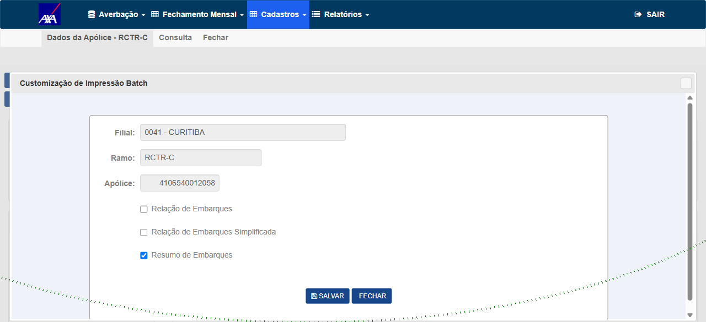
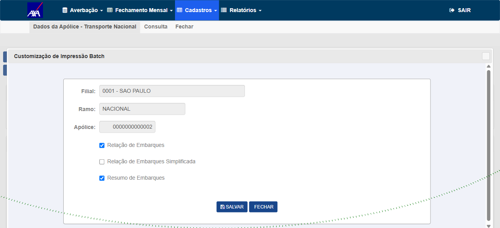
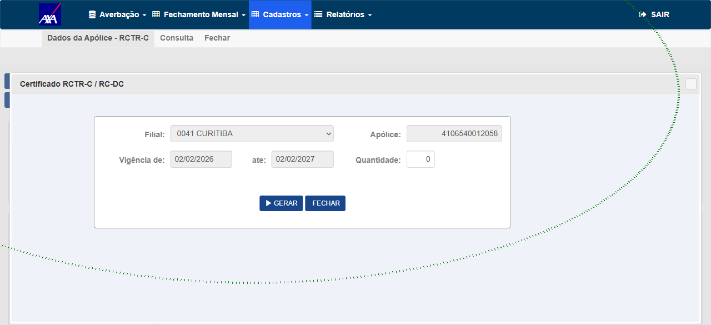
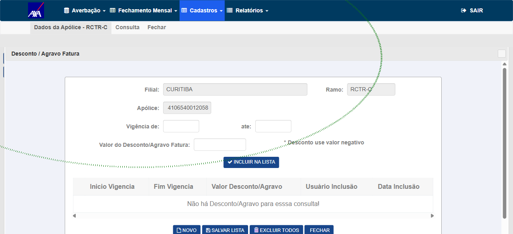
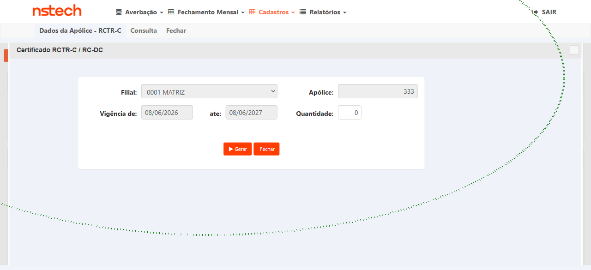

662bc6bc3/45500a76d, PRs !1500/!1509)662bc6bc3/45500a76d, PRs !1500/!1509): CITHelper.RetornaUrlCITWEB deixou de forçar http via #if DEBUG e passou a resolver o scheme pelo request. Frame CustomizacaoImpressaoBatch carrega em https, sem Mixed Content, em 2 ramos (RCTR-C e Transporte Nacional) e 2 tenants (AXA e NSTECH), e sem regressão nos fluxos irmãos testados (Certificado, Desconto/Agravo Fatura). Execução via UI (Playwright MCP), registrada por André Madeira em 06/08/2026 no card #7972.
4106540012058 (filial 0041 CURITIBA) · Transporte Nacional 0000000000002 (filial 0001 SAO PAULO) · NSTECH 0000000000333 (filial 0001 MATRIZ)CertificadoApolice e DescontoAgravoFatura foram validadas; PremioMinimo e CadastroInstalacaoAtm não foram executadas. Do CA do card, Cadastro de Estados de Restrição e Prêmio Mínimo/por Vigência seguem sem cobertura de QA (Subgrupo aparece apenas na evidência do dev, no docx anexado).V 1.0.260703.1628 (carimbo de 03/07), anterior aos commits do fix (03/08) — o registro do próprio QA anota que naquela build o botão Impressão Batch nem existe. O APROVADO comprova o comportamento do helper naquele tenant, mas não comprova deploy do fix em segundo tenant.Nacional/DadosApolice é servida sobre HTTPS, mas o frame de Impressão Batch (CustomizacaoImpressaoBatch) era montado com http:// e o navegador o bloqueava como Mixed Content.
Root cause (confirmada em código): CommonApplication/Helpers/CITHelper.cs:141-144 — scheme="https"; #if DEBUG scheme="http"; #endif, e o .csproj definia DEBUG em toda build por tenant → sempre http. Fix aplicado (commits 662bc6bc3/45500a76d, PRs !1500 03/08 10:29 e !1509 03/08 14:31): resolver o scheme pelo request (X-Forwarded-Proto → senão request.Url.Scheme), removendo o #if DEBUG — corrige o frame e os headers CSP frame-ancestors. Comportamento pós-fix confirmado em HML em 06/08 (CT-MXC-001/002/004/005); a suíte unitária que provaria a correção na origem segue sem rodar (CT-MXC-003).
| IN | OUT |
|---|---|
Frame de Impressão Batch em https; scheme dirigido pelo request; regressão dos consumidores CSP frame-ancestors; multi-tenant; dev local http. |
Ocorrência irmã MenuController.cs:114-118 (SignalR) — mesma root cause, ticket próprio. |
4106540012058 (filial 0041 CURITIBA) e Transporte Nacional 0000000000002 (filial 0001 SAO PAULO); NSTECH — 0000000000333 (filial 0001 MATRIZ).
Prioridade: P1 bloqueante · P2 importante · P3 desejável. Execução de 06/08/2026: 4 APROVADO · 2 BLOQUEADO · 0 pendente.
4106540012058 (filial 0041 CURITIBA).mixed.O frame CustomizacaoImpressaoBatch carrega dentro da página (Filial/Ramo/Apólice + opções de Relação/Resumo de Embarques) e o console não registra Mixed Content.
CustomizacaoImpressaoBatch carregou via https (apólice 4106540012058 RCTR-C, filial 0041 CURITIBA) — sem Mixed Content no console. iframe src confirmado https://axa-hml-faturamento.nsseg.com.br/Nacional/CustomizacaoImpressaoBatch?...&numeroApolice=4106540012058.

axa-hml-faturamento.nsseg.com.br.Quando este CT foi escrito (03/08, plano em Gate 1) o objetivo era reproduzir o defeito: "Reprodução (RED) — frame Impressão Batch bloqueado", esperando no console Mixed Content ... requested an insecure frame 'http://...CustomizacaoImpressaoBatch' ... has been blocked. As PRs !1500 (03/08 10:29) e !1509 (03/08 14:31) publicaram o fix antes da janela de execução do QA (06/08), então o RED deixou de ser reproduzível em HML e o CT foi executado como confirmação pós-fix no ramo RCTR-C — foi assim que o resultado entrou no card.
A reprodução original está registrada no ReproSteps do card #7972 (abertura em 31/07), com o log completo:
Mixed Content: The page at 'https://cit-hml.axabr.ad:8085/Nacional/DadosApolice?cmbRamo=54...' was loaded over HTTPS, but requested an insecure frame 'http://cit-hml.axabr.ad:8085/Nacional/CustomizacaoImpressaoBatch?AbertoPorASPNET=true&NaoExibeLayout=true...'. This request has been blocked; the content must be served over HTTPS.
Mesmo fluxo → o frame carrega, sem Mixed Content; src do frame é https://. Prova final de que o LB/request resolve https.
0000000000002 (filial 0001 SAO PAULO) — mesmo comportamento do CT-MXC-001, sem regressão entre ramos; iframe src https confirmado. Com o CT-MXC-001 (RCTR-C), fecha a exigência do CA de validar em pelo menos 2 ramos distintos.

X-Forwarded-Proto=https → URL https://.https://.http:// (dev local).RED contra o código pré-fix (que retornava http); GREEN pós-fix. Rodaria no /run-regression (test-validator, projeto UnitTestCITWEB) — não chegou a rodar (ver Resultado).
UnitTestCITWEB/ADO-7972/ está travada por dependência NuGet (Serilog) não restaurada em projeto não relacionado (SimetriasLog), conforme o próprio dev (Itamar Prado) registrou no docx ADO-7972-Evidencias-Testes.docx anexado ao card.
SimetriasLog e rodar UnitTestCITWEB/ADO-7972/.Telas com CSP (CertificadoApolice, PremioMinimo, CadastroInstalacaoAtm, DescontoAgravoFatura) abrem os frames same-origin normalmente pós-fix.
4106540012058: Certificado (iframe CertificadoApolice, https confirmado) e Desconto/Agravo Fatura (iframe DescontoAgravoFatura, https confirmado, modal funcional). Sem Mixed Content em nenhum dos dois — nenhuma regressão nas telas cobertas.

CertificadoApolice (Filial 0041 CURITIBA · Apólice 4106540012058 · vigência 02/02/2026–02/02/2027).
DescontoAgravoFatura (Filial CURITIBA · Ramo RCTR-C · Apólice 4106540012058), lista e ações renderizadas.PremioMinimo e CadastroInstalacaoAtm. Busca nos comentários do card: os dois nomes só aparecem na transcrição do plano (Gate 1, 03/08) e não aparecem no registro de execução de 06/08.
ADO-7972-Evidencias-Testes.docx, ambiente /alfa/, referência de contexto — não substitui execução de QA): Subgrupo (Nacional e Internacional).RetornaUrlCITWEB — Prêmio Mínimo/por Vigência e Cadastro de Estados de Restrição (junto de Certificado e Desconto/Agravo, que o QA cobriu em 06/08). Cadastro de Instalação ATM não aparece nessa lista do docx — ele vem do escopo do próprio CT-MXC-004.Repetir CT-MXC-002 em outro tenant https (ex.: STARR/EZZE) → frame https OK.
https://nstech-hml-faturamento.nsseg.com.br). Como aquela build não expõe o botão Impressão Batch, a validação foi feita pelo botão Certificado — mesmo helper CITHelper.RetornaUrlCITWEB — na apólice 0000000000333 (filial 0001 MATRIZ): iframe CertificadoApolice carregou em https, sem Mixed Content.

NSTECH V 1.0.260703.1628 (carimbo de 03/07), e o fix é de 03/08 (commits 662bc6bc3/45500a76d, PRs !1500 03/08 10:29 e !1509 03/08 14:31). O próprio registro anota que nessa build o botão Impressão Batch nem existe — indício adicional de que o deploy está atrás do fix. Portanto o APROVADO demonstra que o frame abre em https nesse tenant, mas não demonstra o comportamento pós-fix em um segundo tenant.
Em ambiente http local, a URL continua http:// (não quebra o frame local). Coberto também pelo unit CT-MXC-003.
| Requisito (ReproSteps/esperado) | CT | Situação após 06/08 |
|---|---|---|
| Frame carrega em https, sem bloqueio (≥ 2 ramos) | CT-MXC-001, 002 | Coberto — RCTR-C e Transporte Nacional na AXA. |
| Abrangência multi-tenant | CT-MXC-005 | Coberto com ressalva — 2º tenant em versão anterior ao fix. |
| Reprodução do defeito (RED) | CT-MXC-001 (histórico) | Documentada no ReproSteps do card (31/07); não reexecutada — fix publicado em 03/08, antes da janela de execução. |
| Scheme dirigido pelo request (não build-config) | CT-MXC-003 | Sem cobertura — CT BLOQUEADO (suíte unitária travada por NuGet Serilog). |
| Sem regressão de frames/CSP nos consumidores do helper | CT-MXC-004 | Parcial — 2 de 4 telas; Prêmio Mínimo, Estados de Restrição e Instalação ATM sem cobertura. |
| Dev local (http) não regride | CT-MXC-006 | Sem cobertura — CT BLOQUEADO (ambiente local fora do alcance do QA). |
X-Forwarded-Proto e terminar TLS, o fallback (request.Url.Scheme) pode voltar http — CT-MXC-002 é a prova final em HML.iframe src https confirmado.RetornaUrlCITWEB): CT-MXC-004 cobre a regressão dos ~7 consumidores CSP — risco ainda aberto em parte, porque só 2 desses consumidores foram verificados (ver Cobertura no CT-MXC-004).